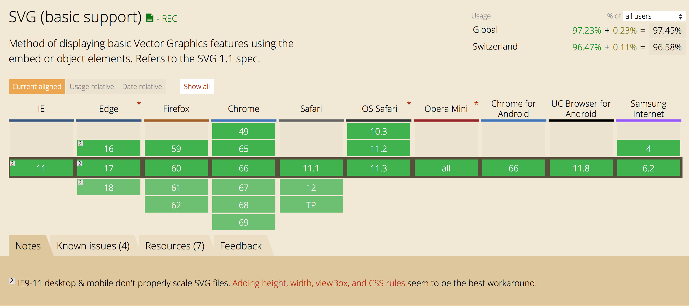
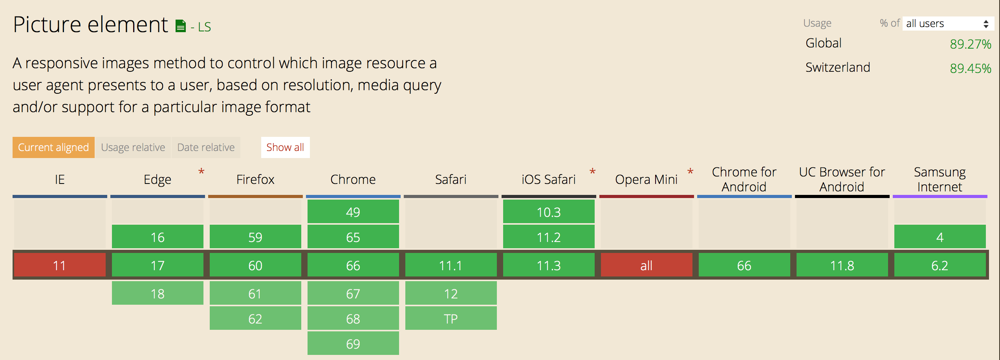

Adapt styles according to screen size

Syntax
@media (max-width: 70em) { }
@media print { }
@media screen and (min-width: 1024px) { }
@media screen and (max-height: 500px) { }
@media screen and (min-resolution: 96dpi) { }
@media screen and (orientation: landscape) { }
Example
.header {
padding: 20em;
}
@media screen and (max-width: 768px) {
.header {
padding: 5em;
}
}
All possible attributes
https://developer.mozilla.org/en-US/docs/Web/CSS/Media_Queries/Using_media_queries#Syntax
SVG
High pixel density displays
<picture>
Example
<picture>
<source srcset="baboon_s.png 1x, baboon_m.png 2x, baboon_l.png 3x">
<img src="baboon_l.png" alt="Baboon">
</picture>
Combine with media queries
<picture>
<source
media="(max-width: 450px)"
srcset="baboon_s.png 1x, baboon_m.png 2x"
>
<source
media="(max-width: 800px)"
srcset="baboon_m.png 1x, baboon_l.png 2x"
>
<source srcSet="baboon_l.png">
<img src="baboon_l.png" alt="Baboon">
</picture>
Question Time!